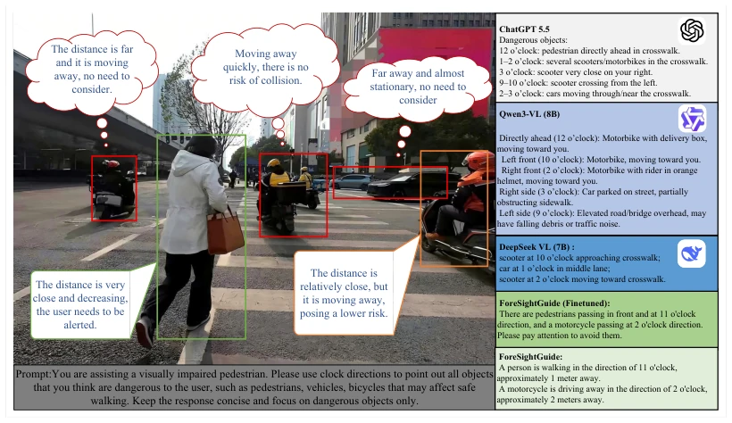
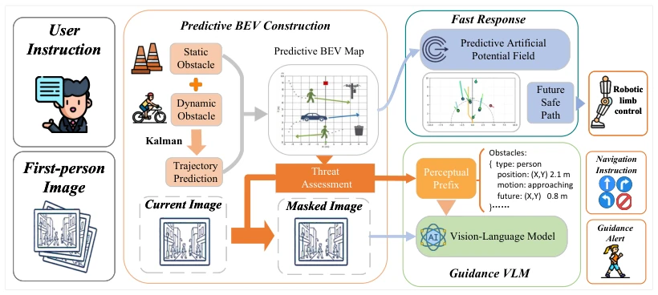
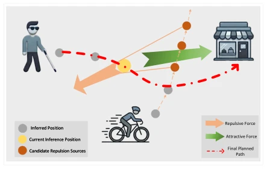
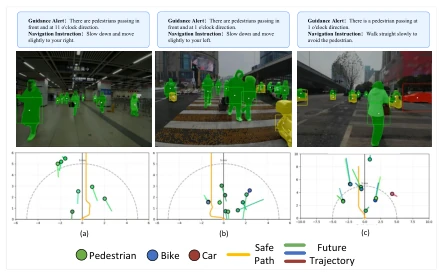

This ForeSightGuide attempts to equip VLMs with "brake pads" to address the pain point of cognitive overload caused by excessive verbosity of VLMs during blind navigation. It implements a fast-slow dual-frequency architecture, using prediction to filter non-threat objects, indeed reducing redundant alarms from 1.74 to 0.299, which is commendable. However, in 2026, still using Kalman filtering to predict pedestrian trajectories appears somewhat "retro" when facing complex crowd interactions, a point the paper itself admits. The self-built dataset has only 140 pairs, the scale is small, and generalization ability remains questionable. Additionally, depth estimation has high computational costs, affecting real-time performance. But the overall idea is clear, decoupling "physical obstacle avoidance" and "semantic guidance", adding some "predictive" capability to embodied navigation; though imperfect, it is practical enough for deployment in specific scenarios.
研究动机Motivation
盲人出行在动态场景下面临巨大风险，现有电子旅行辅助（ETA）系统要么依赖昂贵基础设施（Dakopoulos and Bourbakis 2010），要么 VLM 反应迟钝。WalkVLM (Yuan et al. 2025) 虽引入 VLM，但容易描述无关物体，增加认知负担。He et al. 2026 指出安全感知应聚焦威胁对象。本文针对 VLM 在动态场景下的冗余警报问题，提出预测性框架。现有方法多依赖当前帧，缺乏对未来风险的预判，导致指导滞后或信息过载。静态导航已较成熟，但日常行走需同时处理移动行人、车辆及临时障碍，单纯反应式系统易遗漏未来风险。因此，需要结合语义理解与预测性风险评估，提供准确且低冗余的引导，这对独立出行至关重要。
Traveling for the blind faces huge risks in dynamic scenes; existing Electronic Travel Assistance (ETA) systems either rely on expensive infrastructure (Dakopoulos and Bourbakis 2010) or VLMs react sluggishly. WalkVLM (Yuan et al. 2025) introduces VLMs but easily describes irrelevant objects, increasing cognitive burden. He et al. 2026 point out that safety perception should focus on threat objects. This paper proposes a predictive framework targeting the redundant alarm problem of VLMs in dynamic scenes. Existing methods mostly rely on current frames, lacking prediction of future risks, leading to lagging guidance or information overload. Static navigation is relatively mature, but daily walking requires handling moving pedestrians, vehicles, and temporary obstacles simultaneously; purely reactive systems easily miss future risks. Therefore, combining semantic understanding with predictive risk assessment is needed to provide accurate and low-redundancy guidance, which is crucial for independent travel.

Figure 1: Example of redundant VLM guidance in a dynamic crossing scene. General-purpose VLMs may report distant or non-threatening objects, which increases cognitive load for BVIPs. ForeSightGuide filters objects by motion and risk, and only reports obstacles that may affect the user’s path.
ForeSightGuide adopts a fast-slow dual-frequency response strategy. The overall process is divided into environment perception, safe path planning, and VLM decision-making. The perception layer uses YOLO11 and Depth Pro to construct a predictive Bird's Eye View (BEV), and predicts dynamic obstacle trajectories via Kalman filtering. The core innovation lies in the risk filtering mechanism: removing non-threat visual content via masking, and generating a structured Perceptual Prefix input to the VLM, forcing the model to focus on dangerous objects. Safe path planning uses Predictive Artificial Potential Field (APF), generating obstacle avoidance paths combining future positions, using attraction to maintain direction and repulsion to avoid obstacles. The VLM part is based on Qwen2VL-7B, receiving masked images and structured information to generate navigation instructions and alarms. This design achieves the combination of high-frequency physical guidance and low-frequency semantic feedback, effectively reducing cognitive load and ensuring physical safety and semantic accuracy.

Figure 2: Overview of ForeSightGuide. The framework predicts obstacle motion, filters non-threatening objects, and provides both high-frequency safe path planning and low-frequency VLM-based guidance for BVIPs.

Figure 3: Illustration of the predictive artificial potential field method. The planner uses a default forward attractive force to maintain walking direction, while predicted obstacle po- sitions are treated as candidate repulsion sources to push the reference path away from future hazards.
Experiments were conducted on the WAD dataset and a self-built dynamic scene dataset. Baselines include GPT-5.5, Qwen2VL, and Qwen3VL. Evaluation metrics include ROUGE, semantic similarity, and number of redundant alarms. ForeSightGuide achieved ROUGE-1 of 0.424 on the self-built dataset, reducing redundant alarms to 0.299/instance, a 82.8% reduction compared to GPT-5.5. Real-time walking tests showed an average response interval of 650ms, with VLM instruction accuracy reaching 84.41%. Ablation studies show that removing the perceptual prefix and mask filtering both lead to performance degradation, proving their complementarity. Although there is room for improvement in real-time performance, it proves the effectiveness of predictive perception in improving navigation quality. The self-built dataset has only 140 pairs, limiting generalization evaluation, requiring larger scale data verification in the future.

Figure 4: Representative examples of ForeSightGuide in dy- namic indoor and outdoor scenes. The upper row shows the generated navigation instructions and guidance alerts, the middle row shows instance-level obstacle perception, and the lower row shows the predictive BEV map with the planned safe path and future obstacle trajectories.